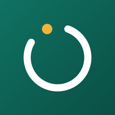

Спасибо, ваш голос учтён
Когда наберётся достаточно голосов, выпустим «Мой ТСР» в App Store. Ваши данные в веб-версии останутся на телефоне.
Вернуться в приложение
Когда наберётся достаточно голосов, выпустим «Мой ТСР» в App Store. Ваши данные в веб-версии останутся на телефоне.
Вернуться в приложение